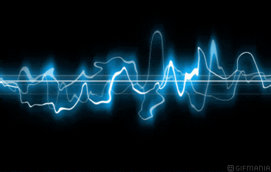
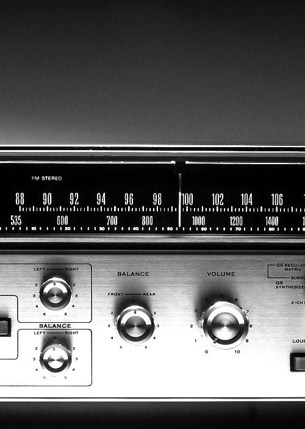
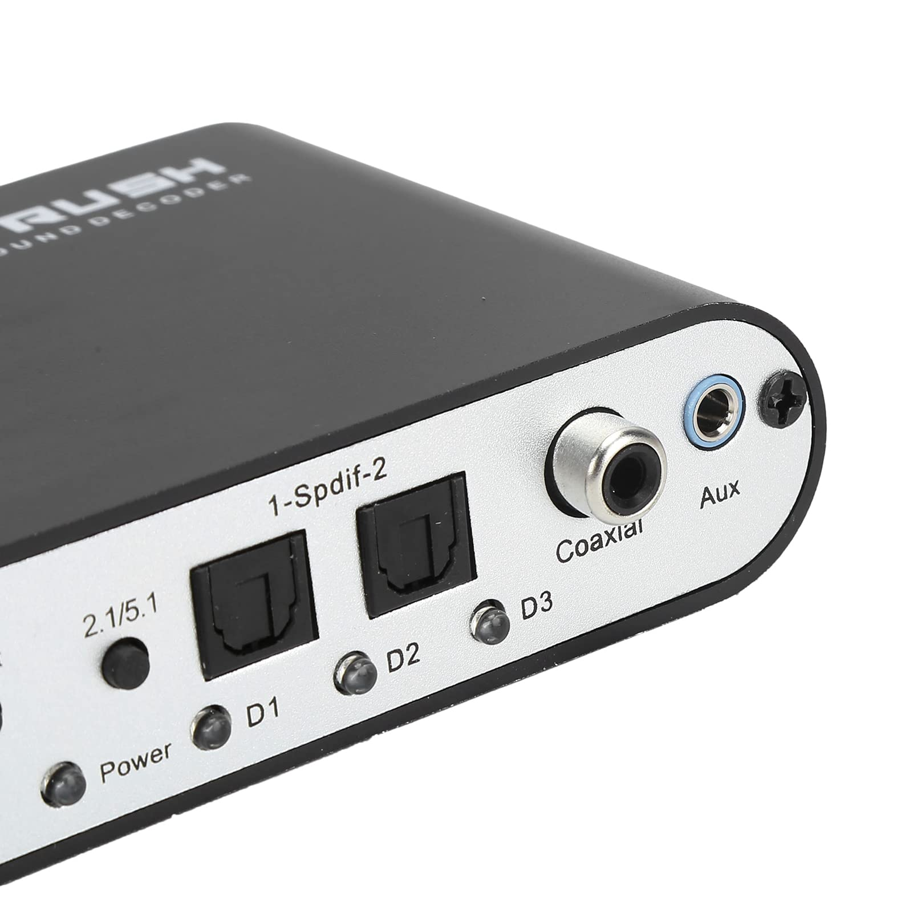
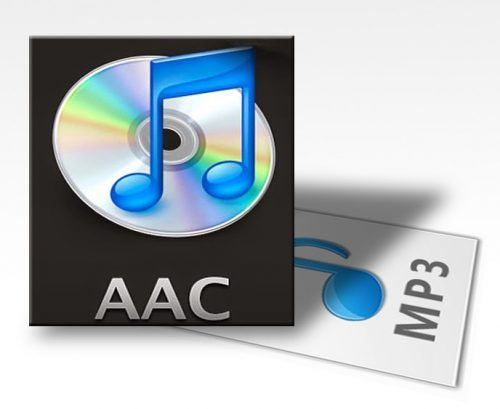
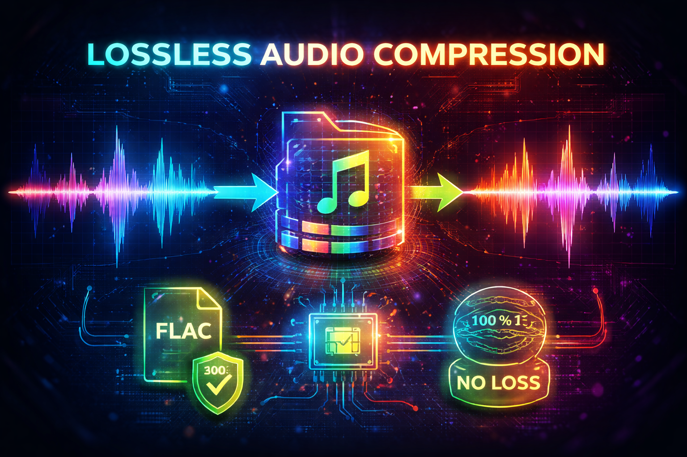
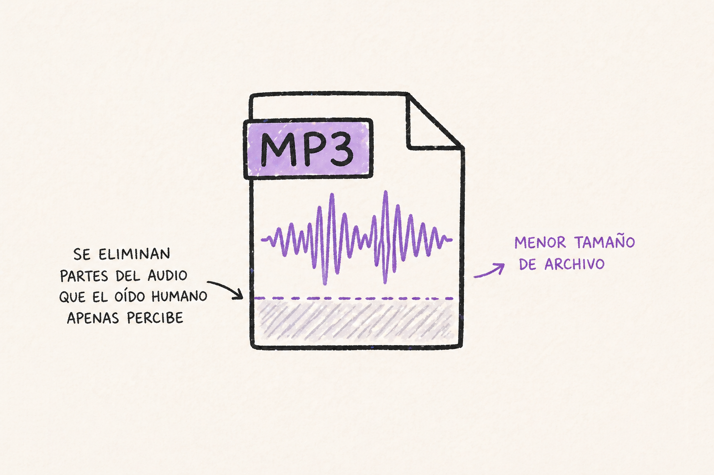

4.1 EL SONIDO
¿QUÉ ES?
El sonido es una vibración que se propaga en forma de ondas a través de un medio como el aire, el agua o los sólidos. Estas ondas son percibidas por el oído humano y transformadas en señales que el cerebro interpreta.
Las principales características del sonido son la frecuencia, que determina el tono, y la amplitud, que determina el volumen.
Características
- Frecuencia
- Amplitud
- Intensidad
- Tono
4.2 ACÚSTICA
¿Qué es?
La acústica es la rama de la física encargada de estudiar la producción, transmisión y percepción del sonido. Analiza fenómenos como la reflexión, absorción y propagación de las ondas sonoras.
Su aplicación es fundamental en teatros, estudios de grabación, auditorios y sistemas de comunicación.
Aspectos importantes:
- Reflexión
- Absorción
- Reverberación
- Eco
4.3 SISTEMA AUDITIVO HUMANO
¿Qué es?
El sistema auditivo humano es el conjunto de órganos responsables de captar y procesar los sonidos. Está compuesto por el oído externo, medio e interno.
Su funcionamiento permite distinguir diferentes tonos, volúmenes y direcciones de procedencia de los sonidos presentes en el entorno.
Partes:
- Oído externo
- Oído medio
- Oído interno
4.4 AUDIO DIGITAL
¿Qué es?
El audio digital es la representación numérica del sonido mediante secuencias de datos binarios. Este proceso permite almacenar, editar y transmitir sonidos con gran precisión.
El audio digital ha reemplazado en gran medida a los sistemas analógicos debido a su calidad, facilidad de distribución y resistencia al deterioro.
Ventajas
- Fácil almacenamiento
- Mejor calidad
- Edición sencilla

4.5 MODULACIÓN POR PULSOS CODIFICADOS (PCM)
¿Qué es?
La Modulación por Pulsos Codificados o PCM es una técnica utilizada para convertir señales analógicas en señales digitales. Consiste en tomar muestras periódicas de una señal sonora y representarlas mediante valores numéricos.
Es la base de formatos como WAV y de muchos sistemas modernos de grabación de audio.
Etapas
- Muestreo
- Cuantificación
- Cuadificación
4.6 AMPLITUD MODULADA
¿Qué es?
La Amplitud Modulada es un sistema de transmisión en el que la amplitud de una señal portadora varía de acuerdo con la información que se desea transmitir.
Fue una de las primeras tecnologías utilizadas en la radio y sigue empleándose en algunas comunicaciones debido a su gran alcance.

Ventaja
- Amplia cobertura Desventaja
- Mayor susceptibilidad al ruido.

4.7 FRECUENCIA MODULADO (FM)
¿Qué es?
La Frecuencia Modulada es una técnica de transmisión en la que la frecuencia de la señal portadora cambia según la información enviada.
La radio FM ofrece una mejor calidad de sonido y menor susceptibilidad a interferencias que la radio AM, por lo que es ampliamente utilizada en la actualidad.
Ventajas
- Mejor calidad de audio
- Menos interferencia
4.8 TERMINOLOGÍA
¿Qué ES?
En audio digital existen diversos términos importantes como frecuencia de muestreo, bitrate, códec, amplitud y rango dinámico. Estos conceptos permiten comprender cómo se almacena y transmite el sonido.
Conocer esta terminología facilita la comprensión de los procesos de grabación, edición y compresión de audio.
-
Frecuencia
- Número de vibraciones por segundo. Hertz (Hz)
- Unidad de frecuencia. Bitrate
- Cantidad de datos transmitidos por segundo. Muestreo
- Captura de datos de una señal.
4.9 CODIFICADOR/DECODIFICADOR
¿QUÉ ES?
Un códec es una herramienta de software o hardware encargada de comprimir y descomprimir archivos de audio o video. Su función principal es reducir el tamaño de los archivos sin afectar excesivamente la calidad.
Algunos de los códecs más utilizados son MP3, AAC, FLAC y Opus.
-
Ejemplos:
- MP3
- AAC
- OPUS
- FLAC

4.1O FORMATOS DE AUDIO
¿QUÉ ES?
Los formatos de audio son los distintos tipos de archivos utilizados para almacenar sonido digital. Cada formato posee características específicas relacionadas con la calidad y el nivel de compresión.
Entre los más populares se encuentran MP3, WAV, AAC, FLAC y OGG.
-
MP3
- Compresión con pérdida. WAV
- Alta calidad sin compresión. AAC
- Mayor eficiencia que MP3. FLAC
- Compresión sin pérdida. OGG
- Formato libre y abierto.

4.11 SIN PÉRDIDA
¿QUÉ ES?
La compresión sin pérdida conserva toda la información original del archivo de audio. Esto significa que la calidad permanece intacta después de la compresión.
Este método es utilizado principalmente en entornos profesionales donde la fidelidad del sonido es una prioridad.
-
VENTAJA
- Calidad máxima EJEMPLOS
- FLAC
- ALAC

4.12 CON PÉRDIDA (LOSSY)
¿QUÉ ES?
La compresión con pérdida elimina ciertos datos considerados menos perceptibles para el oído humano con el fin de reducir considerablemente el tamaño del archivo.
Es el método más utilizado en plataformas de música debido a su equilibrio entre calidad y almacenamiento.
-
VENTAJA
- Archivos ligeros Ejemplos
- MP3
- AAC

4.13 ¿QUÉ ES EL STREAMING?
¿QUÉ ES?
El streaming es una tecnología que permite reproducir contenido multimedia directamente desde Internet sin necesidad de descargar completamente el archivo.
Esta modalidad ha revolucionado el consumo de música, video y transmisiones en vivo gracias a su comodidad e inmediatez.

-
BENEFICIOS
- Acceso inmediato
- Mejor almacenamiento

4.14 PLATAFORMAS DE MÚSICA EN STREAMING
¿QUÉ SON?
Las plataformas de música en streaming permiten acceder a millones de canciones mediante una conexión a Internet. Los usuarios pueden crear listas de reproducción, descubrir artistas y escuchar contenido desde distintos dispositivos.
Entre las más populares se encuentran Spotify, Apple Music, YouTube Music, Deezer y Amazon Music.
-
PLATAFORMAS POPULARES
- Spotify
- Apple Music
- Youtube Music
- Deezer
- Amazon Music


AUDIOS